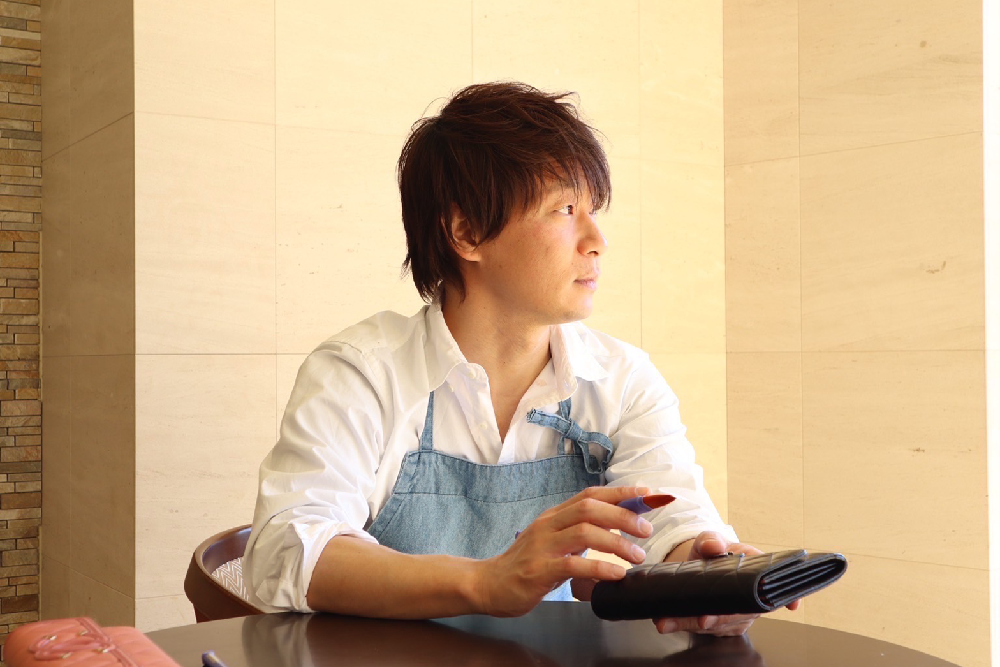
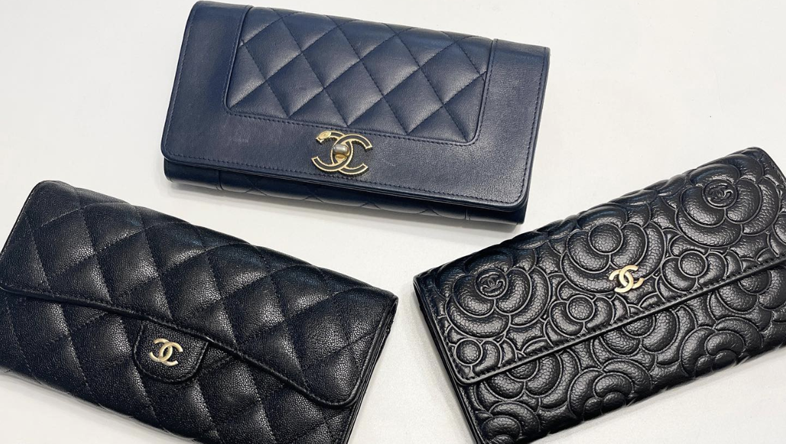

第1話をご覧いただき
ありがとうございます

改めまして、小堀 潤です。
この度は、無料オンライン講座にご登録いただきありがとうございます。
第1話はいかがでしたでしょうか？
・老後にも働ける仕事を探しているご高齢の方
・これから副業を検討している会社員の方
・専業主婦・子育てママの方
・天候に左右されるような職人の方
・トレンド物販で疲弊をしてしまった物販事業者の方
・長く続けられる新規事業を検討されている経営者の方
etc…
幅広い属性の方に私がブランドリペア物販をオススメする理由をご理解いただけたと思います。
これまでの副業や事業は、夫や妻、子供との大切な時間を犠牲にしてストレスも我慢して生活のために頑張って取り組むモノでした。
しかし、このブランドリペア物販は奥さんや子供も一緒にワイワイ楽しく取り組める一生ものの副業、事業です。
僕の息子や妻はもちろん。
妻のお母さんも楽しく取り組んでいます。
この無料オンライン講座でお伝えする内容は私が累計1000品以上の販売を繰り返して現役トッププレイヤーとして、そして累計100名以上の老若男女の方に伝授する中で試行錯誤を繰り返して編み出した独自の内容です。
愛する妻と、3人の子供たちと、好きな時に旅行に行き、美味しいものを食べ、将来への不安を感じることなく、心から笑い合える。そんな日々を手に入れることができました。
私は本当に、この「ブランドリペア物販」と出会えてよかったと思っています。
それだけではありません。
伸びるリユース市場 ✖︎ 不変の
ブランド品
両方のメリットを得る
『ブランドリペア物販』
このタイミングでこの「ブランドリペア物販」を知ることができたあなたは本当にラッキーです。
なぜなら、このブランドリペア物販は「これからも伸び続けるリユース市場」と「不変の価値を持つブランド品」の良いとこ取りだからです。
第2話、第3話で詳しくお伝えしていきますが、ブランドリペア物販は再現性高くすぐに取り組むことができます。
つまり、1番良いタイミングでこの情報を受け取っていただいたということです。
リユース経済新聞が独自に調べた調査ではリユース市場は2023年には3兆1000億円を超え、なんと13年連続で成長し続けています。
その巨大なリユース市場の中でも特に賑わっている市場が、
『ブランド品市場』（バッグや財布、キーケースなど）
です。
メルカリなどのフリマアプリの普及や中古品への抵抗がなくなってきたことから今後も成長することは簡単に想像できます。
この無料オンライン講座を最後までご覧いただければ、
・スキマ時間にリビングで、家族と一緒に楽しく取り組める！
新しい物販事業のカタチとその全貌や仕組みを知れる
・完全未経験・知識ゼロ・スキルなしの状態から、
毎月10万円〜50万円超えの収入まで具体的な道筋を知れる
・在宅＆低リスク起業で時間とお金から、
自由になるための、具体的なノウハウを知れる
・シャネル、ヴィトン、エルメス…憧れのブランド品リペアの、
基本手順を動画で理解できる
・偽物、法律、クレーム…ブランドリペア物販で、
失敗しないためのプロ直伝の必須知識を入手できる
・主婦、会社員、経営者…
それぞれの状況に合わせた最適な始め方を知れる
・薄利多売・在庫管理・価格競争から抜け出せる
「ブランドリペア物販」の全体像と、
高利益率＆低リスクで稼げる秘密が理解できる
など、「ブランドリペア物販」を成功させるための手順や具体的なお仕事内容など網羅的に知っていただけます。
全話繋がっていますので、すぐに実践していただくためにも動画を見逃さないようにしてくださいね。
- 【未経験OK】家事の合間に月30万円？！ スキマ時間で始める「ブランドリペア物販」とは？副収入500万円を稼いだ現役トッププレイヤーがその秘密を公開します
- 乗り換える物販事業を引退したいあなたへ… 長期安定収入＆低在庫リスク、一生モノの物販事業を実現する「ブランドリペア物販」の全貌を公開（元せどりからスタートして独立・事業化を成功させた講師がその過程を語ります）
- 【SDGs時代の波に乗る】転売とは違う「ブランドリペア物販」のやりがいと将来性とは？リユース市場4兆円トレンドに乗る一生モノのビジネスモデルを大暴露
- 手先の器用さは関係なし！あなたにもできる理由を主婦・高齢者・経営者まで多様な成功事例と一緒にお伝えします
- 会社員時代の苦悩から脱却した講師が語る、リアルな成功体験談と、あなたの未来を変える具体的な第一歩とは？
第1話でお伝えする内容
第1話では、ブランドリペア物販の可能性や全体像ついてお話ししました。
第2話では、実証や収益構造、ビジネスモデルについて詳しく解説します。
「本当にスキマ時間で取り組めるのか？」そう思っている方も多いと思います。
タイマーを活用して撮影したリペア動画を公開するので、楽しみにしていてください笑
私も最初は半信半疑でした。
でも、教えてもらった通りに丁寧にリペアして出品してみると…
すぐに2万7000円で売れたんです。
ですので、自分には無理なんじゃないか？と思わずに一歩踏み出してみてください。
第2話では、
・驚きの高収益事例を証拠画像付きで公開
・利益率40%～80%を叩き出す仕入れ～販売までの全プロセス
・【本当にスキマ時間でOK？】 タイマーで徹底検証
・仕入れ値、リペア費用、販売価格…収益のカラクリを公開
・完全未経験でも安心の3ステップ具体的な作業手順（動画付き解説）
など、より具体的なノウハウを公開します。
さらに、未経験から取り組み、成果を出された方の嬉しい事例もご紹介します。
成果を出された方が、取り組む前にどんな不安があって、どのように一歩踏み出し、どのように学び、どのように行動したのか？生の声を聞いて頂くことであなたの目標を実現するためのヒントを得られるはずです。
第2話でもあなたとお会いできることを楽しみにしております
小堀 潤
